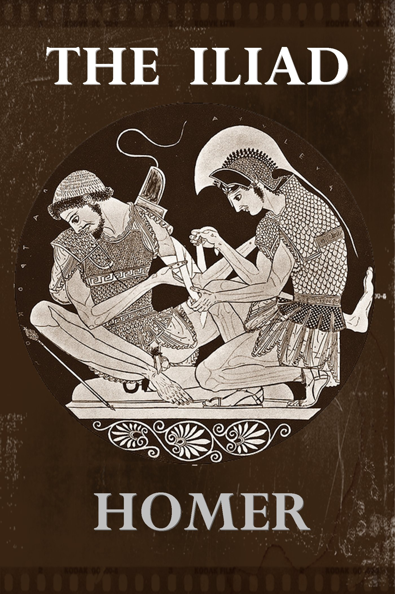

- Marcel Proust, published 1913- George Eliot, published 1871-72

- James Joyce, published 1922
- Miguel de Cervantes, published 1605

- Herman Melville, published 1851
- William Shakespeare, published 1603
- Leo Tolstoy, published 1869
- Homer, written 800 B.C.E.
- F. Scott Fitzgerald , published 1925
- Dante Alighieri, written 1308-20; published 1472
- Gustave Flaubert, published 1856
- Fyodor Dostoyevsky, published 1880
- Gabriel García Márquez, published 1967

- Homer, written 762 B.C.E.

- Vladimir Nabokov, published 1955
- Leo Tolstoy, published 1877
- Fyodor Dostoyevsky, published 1866
- William Faulkner, published 1929
- Emily Brontë, published 1847
- Stendhal, published 1830